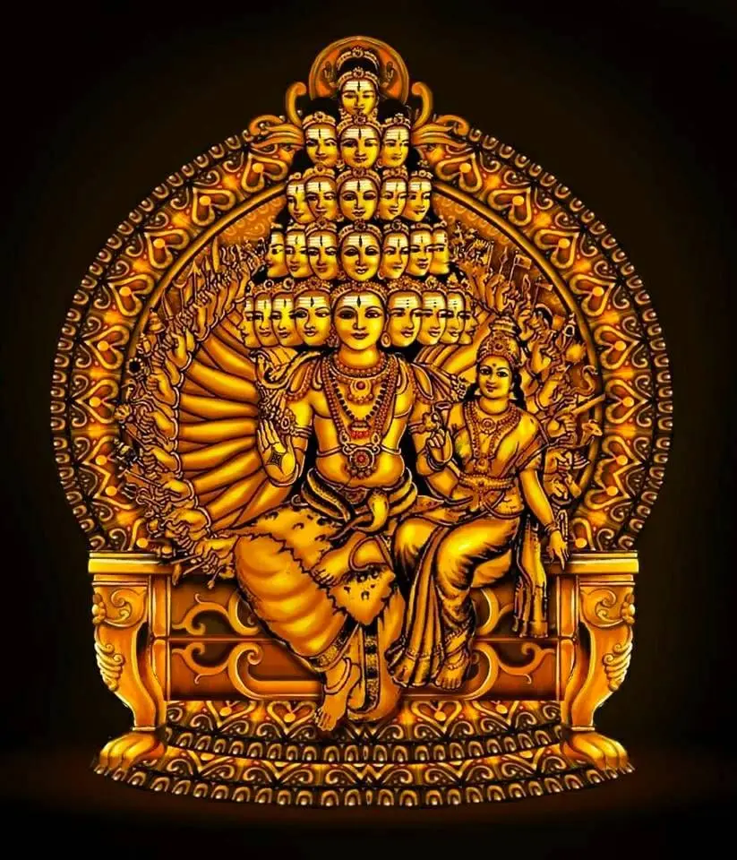

Para Parameshti Guru
Maha Sadashiva
Sadashiva is the highest form of Shiva in the Shaiva Siddhanta doctrine. Even though the illustration provided glorifies the deity as Maha Sadashiva with innumerable faces and powers, for all practical purposes his powers can be grouped under the headings — Srishti (Creation), Sthithi (Preservation), Samhara (Destruction), Thirodhana (Obscuration) and Anugraha (Grace). All gurus are manifestations of the Anugraha shakti of Bhagwan Sadashiva.
